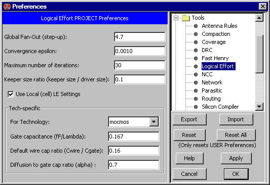

The Logical Effort tool examines a digital schematic and determines the optimal transistor size to use in order to get maximum speed.
The tool is based on the book Logical Effort,
by Ivan Sutherland, Bob Sproull, and David Harris (Morgan Kaufmann, San Francisco, 1999).
It is highly recommended that the user be familiar with the concepts of this book before using the Logical Effort Tool.
|
To control Logical Effort, use the
Logical Effort Preferences (in menu File / Preferences..., "Tools" section, "Logical Effort" tab).
This lets you control a number of settings for Logical Effort analysis.
|  |
Logical Effort Gates
A design that is intended to be analyzed with Logical Effort must be composed of special
Logical Effort gates.
A Logical Effort gate is simply a schematic or layout cell
that conforms to the following specifications:
- The cell has an attribute "LEGATE" which is set to "1".
- The cell has only one output, which may have a logical effort attribute (explained below).
- The cell has zero or more inputs/bidirectional ports. Each of these must have a
logical effort attribute (explained below).
- The cell has an attribute whose name does not matter, but whose value is "LE.getdrive()",
and whose code is set to "Java".

On the input and output exports of the cell, we can define an attribute named "le"
(use the Add LE Attribute to Selected Export command in menu Tools / Logical Effort
to add this attribute).
The value of this attribute is the logical effort of that port.
For example, a NAND gate typically has a logical effort on each input of 4/3, and an output logical effort of 2.
An inverter is defined to have an input logical effort of 1, and an output logical effort of 1.
The size assigned to the logical effort gate is retrieved via the "LE.getdrive()" call.
This value can then be used to size transistors within the gate.
The size retrieved is scaled with respect to a minimum sized inverter
(as are all other logical effort parameters).
So a size of "1" denotes a minimum sized inverter.
While these attributes are defined on the layout or schematic cell definition, they must also
be present on the instantiated icon or instance of that definition.
By default this will be so.
Finally, there must be at least one load that is driven by the gates in order for them to be sized.
A load is either a transistor or a capacitor.
Gates that do not drive loads, or that do not drive gates that drive loads, will not be assigned sizes.
Logical Effort Libraries
Electric comes with a set of libraries that are specially designed for Logical Effort.
Use the Load Logical Effort Libraries (Purple, Red, and Orange) command
(in menu Tools / Logical Effort) to read these libraries.
- The Purple library is a set of logic gates that have been tailored for Logical Effort,
as described above.
- The Red library is a similar set of gates, but they are not setup for Logical Effort.
The Red gates can be used in places where Logical Effort is not to be done.
- The Orange library is a low-level set of gates that is parameterized for a specific fabrication process.
Orange gates are used in the Purple and Red libraries, but should not be used elsewhere.
The Orange library that comes with Electric is tailored for a generic 180 nanometer process.
Advanced Features
There are several advanced features that may be added to the cell definition:
- Attribute "LEKEEPER=1". This cell is defined as a keeper, whose size will be the size of the
smallest Logical Effort gate driving against it, multiplied by the Keeper Ratio.
- Attribute "LEPARALLGRP=0". If set to 0, this gate drives by itself.
If an integer greater than zero,
all gates with that value whose outputs drive the same network are assumed to drive in parallel.
The size needed to drive the load on the network will be equally divided among those gates.
- Attribute "su=-1". This specifies the step-up (fanout) of the gate, and overrides the global
fanout specified in the preferences.
If set to -1, this attribute is ignored, and the global value is used.
LEWIREs
A cell marked with an attribute "LEWIRE=1" denotes a wire load.
There are two ways to specify the capacitance of an LEWIRE.
The first is to use the LEWIRECAP attribute to specify the capacitance in fF.
The second is to use two attributes "L" and "width" to specify the size of the wire -
however this method has been deprecated because it unnecessarily complicates the defintion of the Wire Ratio setting.
The LEWIRECAP is converted to X size by the following formula:
X size = LEWIRECAP * wire_ratio / x1inverter_totalgate
In this case, "wire_ratio" is defined as lambda of gate per fF of wire capacitance.
"x1inverter_totalgate" is the total lambda of gate of an X=1 inverter,
which is defined as the sum of "x1inverter_nwidth" plus "x1inverter_pwidth" (see LEsettings).
Capacitors are likewise converted to X size by the formula:
X size = Capacitance / gate_cap / 1e-15 / x1inverter_totalgate
Commands
These commands may be given to the Logical Effort tool (in menu Tools / Logical Effort):
- Optimize for Equal Gate Delays
Optimizes all logical effort gates (cells) to have the same delay.
The delay is specified by the Global fan-out (step-up) project setting.
This is NOT a path optimization algorithm.
- Optimize for Equal Gate Delays (no caching)
It is intended that both the caching and non-caching algorithms obtain exactly the same result,
however due to the difficulty in obtaining and maintaining correctness when it comes to caching,
the non-caching algorithm is also available.
- List Info for Selected Node
After running sizing, information about a specific logical effort gate can be found by
selecting the gate instance and running this command.
- Back Annotate Wire Lengths for Current Cell
Runs NCC on the current cell against it's matching layout or schematic cell.
Assuming they match, for each LEWIRE in the schematic cell,
it finds the half-perimeter of the matching wire in the layout cell (as if the layout was flattened),
and then changes the "L" parameter on the LEWIRE to the value.
Note, back-annotation is only performed on top level LEWIREs,
and it takes into account the wire's length throughout the layout hierarchy.
- Clear Sizes on Selected Node(s)
Logical effort sizes are stored as parameters on the LEGATE.
Sometimes the sheer number of sizes can overwhelm the allocated process memory,
and can also bloat file sizes when they are no longer needed.
This command deletes saved sizes on a per-node basis.
- Clear Sizes in all Libraries
This command deletes saved sizes everywhere.
- Estimate Delays
This command computes load factors for every network in the cell.
The LEsettings cell
There is a cell called LEsettings with the following attributes:
- su The step-up (or fan-out) per stage.
- wire_ratio The lambda of gate per fF of wire capacitance,
to convert wire capacitance to equivalent gate size (see LEWIREs).
- epsilon The convergence limit.
Make smaller to get more accurate results, but requires more iterations.
- max_iter The maximum number of iterations the algorithm will go through before giving up.
- gate_cap The fF per lambda of gate.
- alpha A modulation applied to the logical effort defined on each gate's output.
It is defined as the ratio of diffusion capacitance to gate capacitance and it converts the output
self-loading (diffusion) capacitance to equivalent units of input loading capacitance.
The self-loading is calculated as:
selfXsize * outputLE * alpha
Therefore, if you set alpha to 0, the self-loading load is ignored for logical effort calculation.
- x1inverter_length The length in lambda of the gates in a X=1 inverter.
- x1inverter_nwidth The width in lambda of the nmos gate in a X=1 inverter.
- x1inverter_pwidth The width in lambda of the pmos gate in a X=1 inverter.